| Project | FunnelStream, a graduation project |
| Version | 1.0, 13 October 2026 (defense day) |
| Repository | https://github.com/omarmohosny/funnelstream, branch funnelstream-build |
| Scope | Simulated Egyptian online store and quick-commerce dark stores, from the first click to a dashboard decision |
| Stack | Python 3.11, Apache Kafka 3.7, Apache Spark 3.5.1 with Delta Lake 3.2, Databricks (Unity Catalog), PostgreSQL 16, Grafana 11.3, Apache Airflow 2.9, Power BI Desktop, Docker |
All data in this project is synthetic. No real customer, order or advertising account is involved. The inventory (stock levels) is simulated as well, and every dashboard that shows it says so.
FunnelStream is an end-to-end data platform for a synthetic Egyptian online store. A simulator produces customer journeys, orders, deliveries, advertising numbers and dark-store stock. The events travel through Kafka into a Bronze and Silver Delta lake on local disk, are checked and deduplicated, and then split into two lanes:
The point that only a joined platform can make is the bridge between the two users: advertising spend sent to products that were out of stock. Operations sees it as lost demand while it happens. Marketing sees it the next morning as an estimated exposed spend.
| Item | Value |
|---|---|
| Kafka topics | 4 (app.events, orders, delivery.events, inventory.events) |
| Silver tables | 10 streaming tables (events, orders, status, items, stock movements and snapshots, express orders, products, customers, quarantine) plus the campaign snapshots from the ad API |
| Gold tables | 12 built (rec_product is an empty slot by design) |
| Data quality checks | 66, run on every Gold build |
| Postgres live and serving tables | 16 |
| Grafana dashboards and alert rules | 6 and 8 |
| Power BI | 7 pages, 92 visuals, 103 measures, 19 tables, 27 relationships |
| Automated tests | 1,169 host tests pass, 0 fail; 217 Spark tests pass in Docker on 22 files |
| Benchmark | 1,000,000 simulated events through the whole pipeline in 654.73 seconds |
| Failure demo | Kill and restart of the Silver job: NO DUPLICATES in two runs in a row |
| Code | about 30,000 lines of Python in 104 commits, of which about 17,800 lines are tests |
What the project demonstrates
MERGE, replay safety).An online store spends money on Meta and Google campaigns, ships by cash on delivery (COD) and prepaid methods, and in the quick-commerce case serves orders from dark stores with a 20-minute express promise. Three questions are hard to answer in one place:
| # | Question | Answered by |
|---|---|---|
| 1 | Spend, CPA and ROAS per campaign and day. The headline ROAS uses delivered revenue; placed ROAS is secondary | Power BI page Campaigns |
| 2 | Conversion and cart and checkout abandonment per channel and platform | Power BI page Funnel |
| 3 | The funnel from view to cart, checkout, order and delivery | Power BI pages Funnel and Executive |
| 4 | Cancellation, failed delivery and delivery lead time per carrier and city | Power BI page Operations and Executive |
| 5 | Products browsed and bought per city, recommended products (labelled co-view) | Power BI page Products and cities |
| 6 | Stock, stock-outs and demand that met an empty shelf, now | Grafana operations dashboards |
| 7 | Express delivery against its 20-minute promise | Grafana Express SLA dashboard and alerts |
| 8 | Estimated ad spend exposed to out-of-stock products, the next morning | Power BI Marketing and stock, Grafana Marketing D-1 |
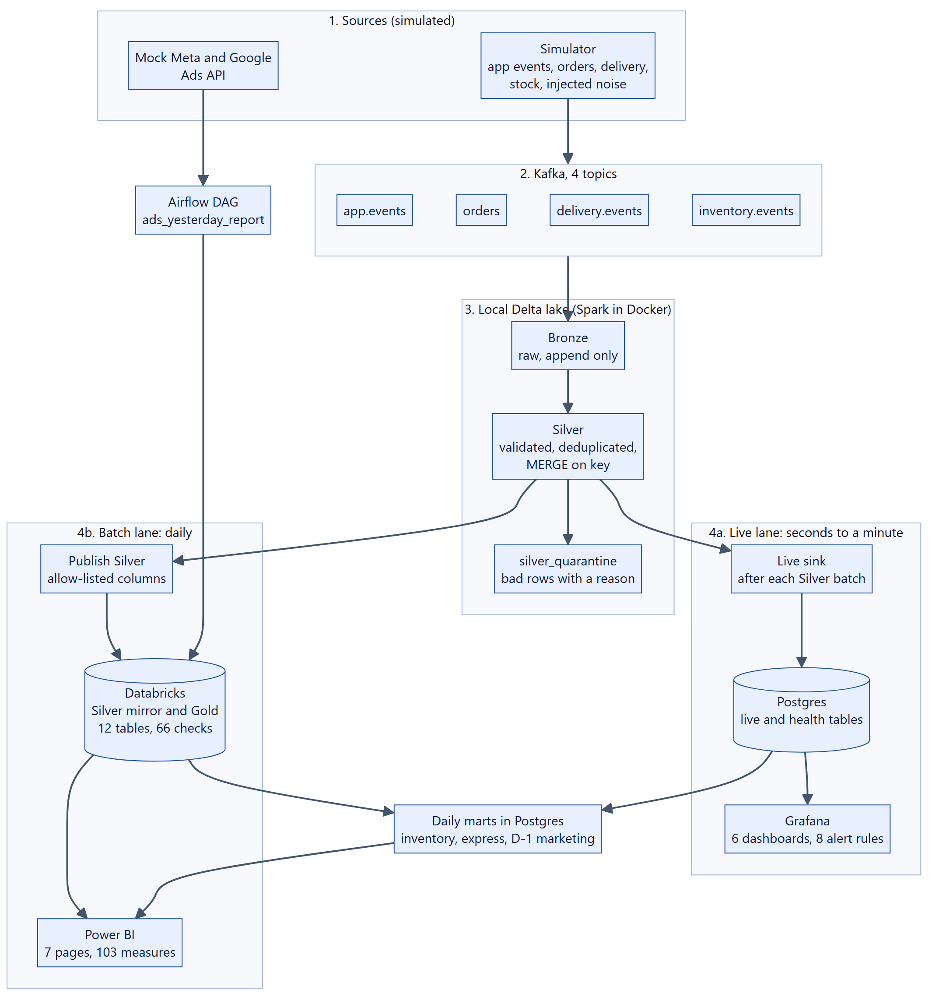
Figure 1. End-to-end architecture. Everything left of Databricks runs on one Windows laptop in Docker.
| Principle | How it is implemented |
|---|---|
| Medallion layers | Bronze keeps every raw message forever. Silver is validated, typed and deduplicated. Gold is business ready. Silver and Gold can be rebuilt from Bronze |
| At-least-once delivery with idempotent writes | Kafka producers use acks=all and idempotence. Silver deduplicates on event_id and writes with a Delta MERGE. Gold upserts on its primary key. The result is exactly-once in effect, without a broker switch |
| Single writer per table | Every Gold table is written only by the Databricks Gold build. The local Spark stream writes only Bronze, Silver and the live tables |
| Two lanes | A live lane for seconds-to-minutes decisions in Grafana. A batch lane for trusted, reconciled daily numbers in Power BI |
| Contracts at the door | A validator checks every event against a versioned schema. A bad event goes to quarantine with an error code, never into the numbers |
| Declared definitions | One metric dictionary (docs/metrics.md) defines every KPI. Dashboards repeat the definition next to the number |
| Fallbacks | A GoldStore interface has a Databricks and a Postgres backend, so the Gold tables can load into Postgres if Databricks is unavailable. The Airflow steps also run as a Python script |
| Layer | Technology | Why |
|---|---|---|
| Event transport | Apache Kafka 3.7 (KRaft), 4 topics | Decouples producers and the lake, keeps messages while the job is down, replays after a crash |
| Stream processing | Spark Structured Streaming 3.5.1 in Docker, Delta Lake 3.2 | Checkpoints, MERGE, partitioned Delta tables. Spark needs Linux on this Windows host, so it runs in a container |
| Local lake | Delta folders under data/lake |
No object store needed on a laptop |
| Cloud lakehouse | Databricks (Free Edition SQL warehouse, Unity Catalog funnelstream) |
Holds the Silver mirror and the Gold star schema |
| Serving store | PostgreSQL 16 | Small, fast tables for Grafana and Power BI marts |
| Monitoring | Grafana 11.3 with provisioned dashboards and alert rules | Live view and alerts, defined as code |
| Orchestration | Apache Airflow 2.9 (optional profile) | Daily ad report; the batch also runs as a script |
| BI | Power BI Desktop (project format, Import mode) | Seven-page report on Gold and the Postgres marts |
| Tooling | Python 3.11, pytest, Docker Compose, PowerShell scripts | Reproducible runs and demos |
| Folder | Purpose |
|---|---|
simulator/, mock_apis/ |
Event generators with injected noise, stock ledger, express orders; mock Meta and Google Ads API |
contracts/ |
Event schemas, topic configuration, the validator, the store and district map |
kafka/ |
Topic creation |
streaming/ |
The Spark jobs: Bronze ingest, Silver clean, the combined pipeline, live metrics |
warehouse/ |
Table definitions, DDL generators, the Databricks and Postgres stores, publish, the Gold SQL (13 numbered steps), data quality checks, live sink, daily marts |
batch/, airflow/dags/ |
Attribution and campaign batch logic, the ads_yesterday_report DAG |
monitoring/ |
Python builders for the Grafana dashboards (the JSON files are generated), provisioning and alert rules |
dashboards/powerbi/ |
The Power BI project, measures.dax and MODEL.md |
scripts/ |
Demo, benchmark, smoke test, failure demo, publish, Gold build, daily marts |
src/llm/ |
The LLM analytics assistant |
tests/ |
88 test files |
docs/ |
Specifications, plans, metrics, running guide, this document |
The simulator is a seeded generator: the same seed gives the same customers, products and events, which makes demos and replay tests repeatable.
app_open, page_view, product_view, product_click, product_search, add_to_cart, remove_from_cart, checkout_started, purchase. Anonymous events have no customer_id and are keyed by session_id.utm_campaign values in the traffic.Egyptian names and +20 phone numbers (kept only in Bronze and Silver); cities weighted by population (Cairo, Giza, Alexandria, Mansoura, Tanta, Assiut and others) with the official districts under each city (for example Nasr City, Maadi and Heliopolis under Cairo); EGP; payment methods cash on delivery (the largest share), Fawry, Vodafone Cash, InstaPay and card; carriers Bosta, Aramex and J&T Express; Ramadan, Eid and weekend peaks; events stored in UTC with the business day taken in Africa/Cairo.
The simulator injects faults on purpose, at configurable seeded rates, and writes the counts to noise_manifest.json. After Silver, the pipeline compares the quarantine count with the manifest; they must match within a tolerance.
| Noise | Rate | Handled by |
|---|---|---|
Duplicate event (same event_id) |
1% | Silver deduplicates on event_id |
| Malformed or truncated JSON | 0.3% | Quarantine BAD_JSON |
| Missing required field | 0.3% | Quarantine MISSING_FIELD |
| Unknown event type or version | 0.2% | Quarantine UNKNOWN_EVENT_TYPE, BAD_VERSION |
| Negative or zero price | 0.2% | Quarantine NEGATIVE_PRICE |
| Future timestamp | 0.1% | Quarantine FUTURE_TIMESTAMP |
| Late event (10 to 120 minutes) and very late | 2% and 0.3% | is_late flag, left out of live metrics, corrected by the batch |
| Timestamp with a non-UTC offset | 1% | Normalised to UTC |
| Product id not in the catalog, null product id | 0.3% and 0.5% | Quarantine UNKNOWN_PRODUCT, MISSING_FIELD |
Dirty city, device, district text |
3% and 2% | Standardised by lookup |
| UTM values upper-cased or padded | 5% of campaign URLs | Lower-cased and trimmed |
| Number sent as a string | 0.3% | Cast, quarantined if it fails |
| Order status out of order, cancel after shipment | 0.5% and 0.3% | Resolved by status rank; the cancel goes to quarantine |
| Bot session (hundreds of events in seconds) | 0.1% of sessions | is_bot flag, left out of funnel and attribution |
Ad API: duplicate pull, clicks > impressions, negative spend, HTTP 503 |
small | Latest-pull rule, SQL checks, Airflow retries |
Synthetic data cannot be proven fully realistic. The assumptions are documented and the distributions are checked against them.
| Topic | Event types | Key | Partitions |
|---|---|---|---|
app.events |
app_open, page_view, product_view, product_click, product_view_end, product_search, add_to_cart, remove_from_cart, checkout_started, purchase |
session_id |
6 |
orders |
order_created, payment_authorised, order_packed, order_shipped, order_cancelled, order_completed, order_returned |
order_id |
3 |
delivery.events |
out_for_delivery, delivered, delivery_failed |
order_id |
3 |
inventory.events |
stock_snapshot, stock_movement |
store_id |
3 |
Keys keep per-session and per-order ordering. Every event uses one envelope: event_id, event_type, event_version, event_time and a payload object.
Bronze tables hold the raw message value plus Kafka metadata (partition, offset, timestamp) and the ingest time. Nothing is dropped or changed. Bronze is append-only and is the source for any rebuild.
Silver validates, types, normalises and deduplicates. Every table has a key, and every write is a Delta MERGE on that key, so replaying a batch changes nothing.
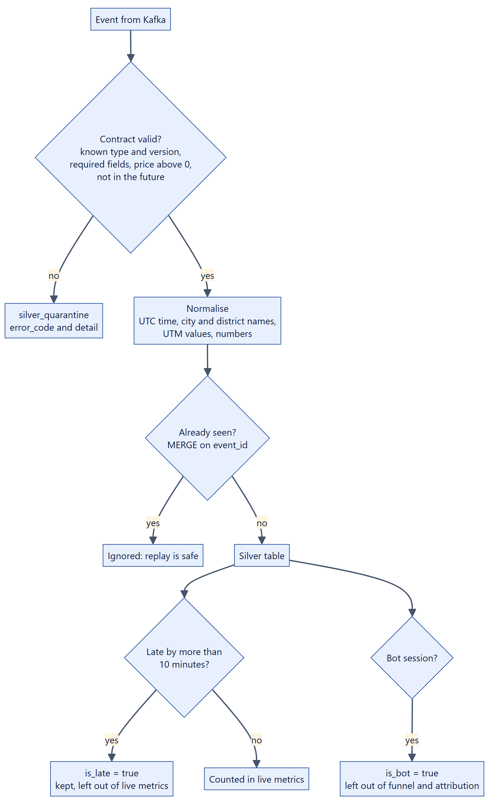
Figure 2. What happens to an event on its way into Silver.
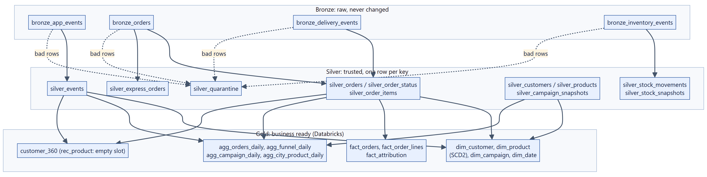
Figure 3. The three layers and the tables in each.
| Silver table | Grain | Key |
|---|---|---|
silver_events |
one app or web event | event_id |
silver_orders, silver_order_status |
order, and each status change | order_id; event_id |
silver_order_items |
one order line | order_id, line_no |
silver_stock_movements, silver_stock_snapshots |
one stock event | event_id |
silver_express_orders |
one express order | order_id |
silver_customers, silver_products |
one version of an entity | id and updated_at |
silver_campaign_snapshots |
one campaign per report date per pull | campaign_id, report_date, pulled_at |
silver_quarantine |
one rejected row | none |
Key Silver rules:
is_late is true when Kafka time minus event time exceeds 10 minutes. Late rows stay in Silver and Gold but are left out of the live metrics.MERGE, so two rows with the same key never meet in one merge.order_shipped is rejected to quarantine.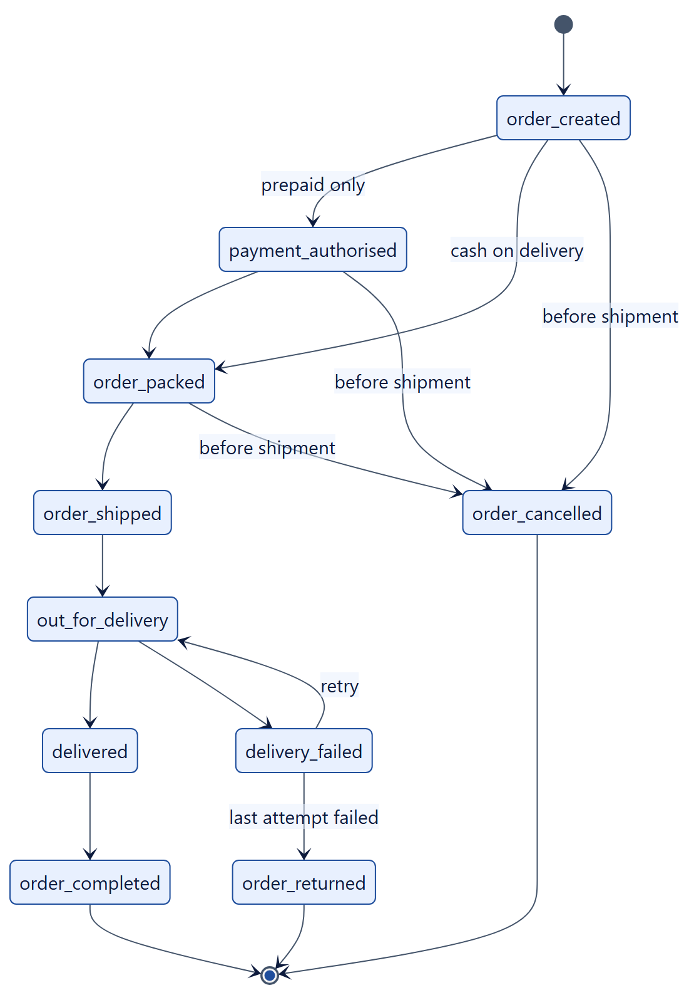
Figure 4. Order lifecycle. Cash-on-delivery orders skip payment_authorised. A cancel is valid only before shipment, judged by event time.
Arrival order is not trusted. The current status of an order is the status with the highest rank: order_created 1, payment_authorised 2, order_packed 3, order_shipped 4, out_for_delivery and delivery_failed 5, delivered 6, order_completed and order_returned 7 (a tie is resolved by the latest status time), order_cancelled 2 and terminal.
| Failure | What protects the data |
|---|---|
| Spark job killed | Checkpoints on disk hold the committed Kafka offsets. The restarted job resumes from them and reads what Kafka kept |
| Message delivered twice | MERGE on the key inserts nothing the second time |
| Event arrives late or out of order | is_late flag; status rank; stock is recomputed in full, never incremented |
| Bad message | Quarantine with an error code and the raw payload |
| Postgres briefly unavailable | The live sink keeps the touched minutes pending and retries on the next batch; Silver is the source of truth |
| A Gold step fails | The Gold build stops on failed checks and nothing downstream is trusted |
On one laptop (12 CPUs, Docker limited to about 8 GB) the benchmark of 1,000,000 simulated events (1,022,333 Kafka messages) ran the whole pipeline in 654.73 seconds. See section 11.4.
After each Silver batch a live sink recomputes only the minutes and the store and product pairs that the batch touched, and writes them to Postgres. Grafana reads Postgres with a read-only role (grafana_ro).
| Table | Content |
|---|---|
live_metrics_minute |
events, active sessions, product views, add to cart, orders per minute and country (non-late, non-bot events) |
pipeline_health_minute, pipeline_batch_log, pipeline_heartbeat |
late and quarantined counts per minute, one row per batch, a heartbeat per component |
live_stock_now, live_stock_store_minute |
current stock per store and product; a per-minute snapshot per store (kept 24 hours) |
live_oos_demand_minute |
demand per minute, store, product and campaign, with the flag out of stock when the minute was written |
live_express_orders |
express orders of the last three hours with their own promise |
dim_store, dim_store_district, dim_product_current |
the store map and current product names, filled once from one source |
inventory_daily, oos_demand_daily, express_daily, marketing_d1_campaign, marketing_d1_product |
daily marts (section 7.5) |
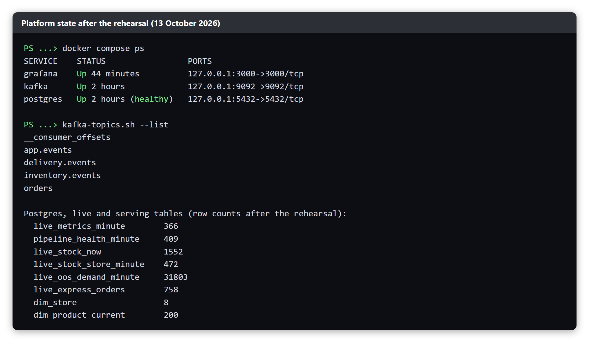
Figure 5. The running platform after the rehearsal of 13 October 2026: containers, the four Kafka topics and the row counts of the live tables.
Six dashboards are provisioned as code: Python builders in monitoring/ generate the JSON, and a test fails if a file drifts from its builder. All use one Postgres data source.
fs-live)Watches the pipeline itself: events per minute, active sessions, orders, product views and add-to-cart, the late-event rate and the quarantine share, quarantine rows per hour, and the age of the Silver heartbeat, the last Gold update and the last publish.
Figure 6. "FunnelStream: live pipeline" during the rehearsal: about 2,400 to 2,950 events per minute.
fs-inventory-ops)The operations user's page: out-of-stock and low-stock products now, how old the last stock change is, demand that arrived on out-of-stock products per minute (the bridge panel), app traffic, the lowest stock and the lost demand of the last 15 minutes, and an express section with at-risk orders, breaches, the on-time rate and the slowest orders.

Figure 7. "FunnelStream: Operations, live inventory". The express section shows breaches because the rehearsal used a 2-minute promise and delivered every 15th order late on purpose.
fs-express-sla)Dedicated to the 20-minute promise: on-time rate (target 95%) with colours at 90 and 95, breaches, orders at risk, open orders, the median delivery time, the on-time rate and the p50 and p90 delivery time by order creation time, a table by store and the open orders closest to their promise. Empty five-minute buckets are shown as gaps, not as 0%.

Figure 8. "FunnelStream: Express delivery SLA". The dashed line is the 95% target.
fs-live-stock)Out-of-stock, low-stock, the in-stock rate and units on hand; out-of-stock products and units on hand per store over time (from the per-minute snapshots); units added and removed per minute; demand on empty shelves; a stock health table by store and a restock watchlist.

Figure 9. "FunnelStream: Live stock monitor".
fs-inventory-daily)Closing stock, products out of stock at day end, oversold units, shrinkage share, closing stock by store, units sold, received and shrunk, lowest days of cover, demand on empty shelves and the express on-time rate and slowest delivery per day.

Figure 10. "FunnelStream: Inventory insights, daily".
fs-marketing-d1)Yesterday's spend, orders, ROAS placed and delivered, the estimated spend exposed to out-of-stock products and the out-of-stock click share, a campaign table sorted by exposed spend and the top products by revenue at risk.

Figure 11. "FunnelStream: Marketing, D-1".
Eight rules are provisioned. Each has a condition, a runbook line and a webhook to a local alert sink.
| Rule (uid) | Fires when | For |
|---|---|---|
Late-event rate above 5% (fs-late-rate) |
late events over the last 5 minutes exceed 5% with at least 20 events | 1m |
Quarantine share above 2% (fs-quarantine-share) |
quarantined rows over the last 5 minutes exceed 2% with at least 20 rows | 1m |
Silver job silent for 2 minutes (fs-silver-silent) |
the Silver heartbeat is older than 2 minutes (no data also fires) | 0 |
No events for 5 minutes (fs-no-events) |
no Silver event arrived in the last 5 minutes (no data also fires) | 0 |
Demand on out-of-stock products (fs-oos-demand) |
at least 5 add-to-carts on an out-of-stock product of one store in each of two consecutive minutes | 0 |
An express order missed its delivery promise (fs-express-sla) |
any breach: delivered after the promise, or undelivered beyond the promise plus a 1-minute grace | 0 |
Express on-time rate is below the 95% target (fs-express-ontime) |
on-time rate below 95% over 30 minutes with at least 5 orders | 2m |
Many products are out of stock in one store (fs-stock-outs) |
more than 20% of a store's products are out of stock | 1m |
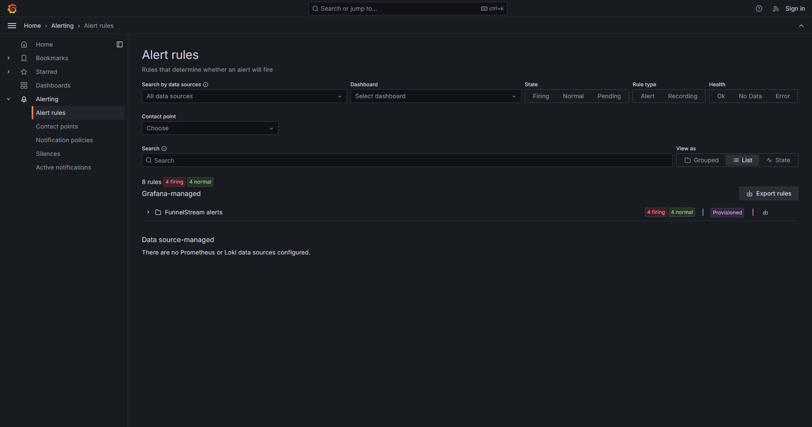
Figure 12. The provisioned rules in Grafana (8 rules). The four firing at capture time were firing because the rehearsal pipeline had been stopped, which is what the silence and no-events rules are meant to detect.
Databricks cannot reach the laptop's Kafka, so Silver crosses as files. scripts/publish_silver.py exports the Silver tables with an allow-list of columns (no names or phone numbers), uploads Parquet to a Unity Catalog volume and MERGEs it into the Silver mirror (insert-only and idempotent). An optional --reset truncates the owned mirror tables before a fresh publish.
Gold is written only by the Databricks Gold build, as 13 numbered SQL steps (step 12, rec_product, is an empty slot).
| Table | Grain | Notes |
|---|---|---|
dim_customer |
customer version | SCD2: tracked city, district, primary_device; valid_from, valid_to, is_current |
dim_product |
product version | SCD2: tracked category, price, is_active |
dim_campaign, dim_date |
campaign; day | dim_date flags weekend, Friday and Saturday, Ramadan, Eid and holidays. Key -1 is the unknown member of the other dimensions |
fact_orders |
order, current state | resolved by status rank; delivery lead hours; cancelled, delivered, returned and first-attempt flags; first-order flag |
fact_order_lines |
order line | quantity and line total in EGP |
fact_attribution |
order and model | last_touch and first_touch; direct orders have a NULL campaign |
agg_orders_daily |
day, channel, payment method, platform | placed, delivered, cancelled, returned and failed-attempt orders and revenue |
agg_funnel_daily |
day, country, channel, platform | sessions, cart and checkout sessions, orders, abandon rates |
agg_campaign_daily |
campaign, report date, model | spend, impressions, clicks, orders, ROAS placed and delivered, CPA, cost per delivered order |
agg_city_product_daily |
city, product, day | views, add to cart, units, revenue |
customer_360 |
customer, current state | orders, spend, last order, preferred payment, repeat buyer |
Dimension keys are resolved when the fact is built, from the dimension version valid at event time. Rows without a match go to quarantine, not to a guessed key.

Figure 13. Gold build on the scratch catalog, 13 October 2026: BATCH OK, 66 checks run, 0 failed. The excerpt shows the reconciliation, SCD2 and quarantine-against-manifest checks.
last_touch gives an order to the campaign of its own session click first, and otherwise to the customer's last click in the previous seven days. first_touch gives it to the first click. An order without a click is direct. The report states both, because last touch favours bottom-funnel channels such as search and retargeting, and neither proves incrementality.
The build runs 66 SQL checks and stops on a failure. They fall into groups:
| Group | Examples |
|---|---|
| Duplicate keys | every Silver and Gold table has zero duplicate primary keys |
| Silver hygiene | no null event_id, no event in the future, no unknown product, every status allowed, line_total = quantity x unit_price, no clicks > impressions, no negative spend |
| Hierarchy and history | exactly one current row per dimension key, no overlapping validity, district belongs to its city |
| Reconciliation | order_total equals the sum of its lines; the order and line counts in Gold match Silver; attribution has two rows per order and its total matches the order total |
| Manifest | the quarantine count equals the noise manifest within 2% |
| Reported | late rate, quarantine share, row counts per table |
Two daily builders write Postgres tables that Grafana and Power BI read:
scripts/build_inventory_daily.py rebuilds the last two Cairo days of inventory_daily, oos_demand_daily and express_daily. Rebuilding two days settles an order that was still open at midnight.scripts/build_d1_marketing.py builds marketing_d1_campaign and marketing_d1_product for day minus one: spend, ROAS and CPA come from the Databricks agg_campaign_daily; out-of-stock demand comes from the Postgres live demand table.The Airflow DAG ads_yesterday_report (03:00 UTC) pulls the ad API once for yesterday, stores it in silver_campaign_snapshots and writes a JSON report. A rerun on the same day returns the stored report without calling the API.
This feature joins the two users. Stock is simulated for eight dark stores: Nasr City, Maadi and New Cairo in Cairo; Dokki in Giza; Montaza and Raml in Alexandria; one in Mansoura; one in Tanta. Each district has one primary store. Assiut and "other" have no store and are excluded from out-of-stock metrics.
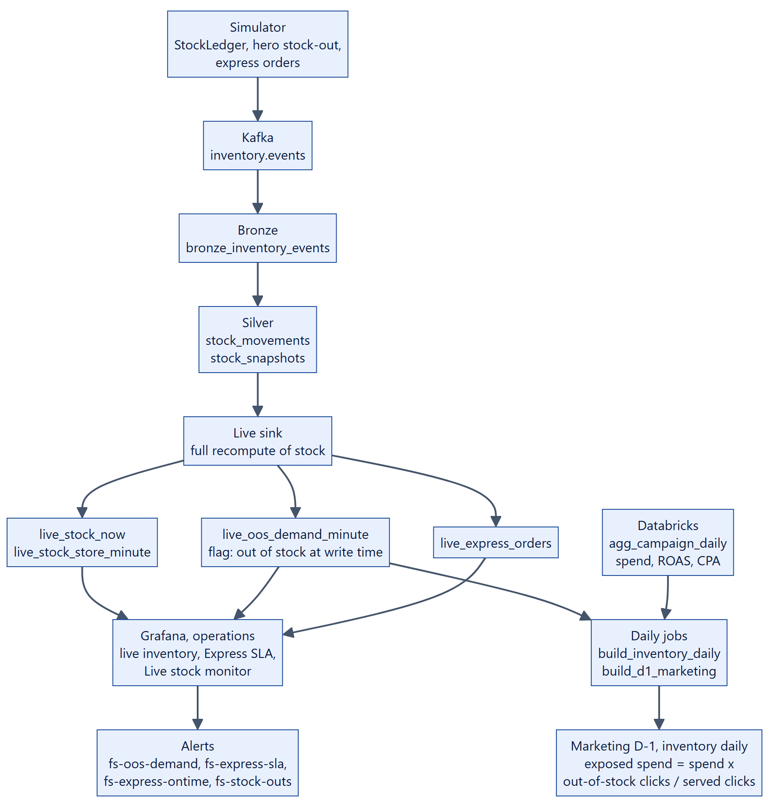
Figure 14. From a stock event to the operations alert and the next-morning marketing number.
A StockLedger in the simulator holds stock per store and product and never lets it go below zero. It emits an opening snapshot for every pair, a baseline snapshot every five minutes and a sold movement for each order line. A sale is booked when the order is created (reserve on order). Demand events are not stopped by empty stock: that is the lost demand. A product is out of stock when available <= 0, and low when 0 < available < reorder point.
The hero scenario (--scenario hero-stockout) makes three hero products at the busiest store start with 40 units, boosts their views and add-to-carts, and restocks them about 90 seconds after the stock-out. The same seed gives the same demo.
Orders from the quick-commerce section carry service = express and their own promised_minutes (20). A normal express order takes 8 to 17.5 minutes. Definitions used everywhere: on time means delivered within the order's promise; breached means delivered later, or still undelivered beyond the promise plus one minute of grace; at risk means undelivered with at least 75% of the promise used. A rehearsal can shorten the promise and force late orders (--express-promise-minutes 2 --late-express-every 15).
oos_click_share = out-of-stock landing clicks / served landing clicks
exposed_spend = spend x oos_click_share
revenue_at_risk = add-to-carts on out-of-stock products x price
Both click counts come from the same table and count only served districts. The advertising API gives spend per campaign per day only, so exposed spend assumes spend is spread evenly over served landing clicks. It is titled "estimated spend exposed to out-of-stock". It is not a measured loss and not "wasted", because a shopper may buy a substitute.
Measured on 12 October 2026 (Windows laptop, Docker with 8 GB, a clean lake, -Rate 10 -SyncEvery 0 -Inventory, times from Postgres and the alert sink):
| Step | Measured |
|---|---|
| Stock rows and per-minute history appear | with the first Silver batches; one history row per store per minute |
First hero product reaches available = 0 |
about 4 minutes after the demo command (Galabeya 61 at Nasr City, 21:16:14 Cairo time) |
| Alert "Demand on out-of-stock products" fires | 1 minute after the stock-out, resolves 1 minute later |
| Restock | about 2 minutes after the stock-out; the out-of-stock count falls to 0 |
| Express rehearsal | 33 express orders, 31 on time, 2 breached; first breach about 7 minutes after the command |
The report is a Power BI project in dashboards/powerbi/ (a .pbip with a report and a semantic model folder). It reads two sources in Import mode, with read-only credentials: eleven Databricks Gold tables and seven Postgres marts (nineteen tables with the measures table), joined by 27 relationships.
The report sits at the end of both lanes (Figure 1). The model is a star: four dimensions and the facts around them.
| Dimension | Relates to (many side, single direction, many-to-one) |
|---|---|
Date (date_key) |
Orders Daily, Orders, Campaign Daily, Funnel Daily, Inventory Daily, OOS Demand Daily, Marketing D1 Campaign, Marketing D1 Product |
Campaign (campaign_id) |
Campaign Daily, Marketing D1 Campaign, OOS Demand Daily, Orders |
Store (store_id) |
Stock Now, Inventory Daily, OOS Demand Daily, Express Daily, Marketing D1 Product |
Product (product_id) |
Stock Now, Inventory Daily, OOS Demand Daily, Marketing D1 Product |
There is no many-to-many relationship and no bidirectional filter. Customer and Customer 360 follow their own columns. The report shows customer_id only: no names or phone numbers.
The report was redesigned on 12 October 2026 around one design identity: a navy header band on every page with a one-line takeaway as its subtitle, one blue accent for the primary series and orange for the comparison, status colours only with a word, Segoe UI, a 1280 x 720 canvas on a computed grid with equal margins and gaps, at most three slicers per page (64 pixels tall, dropdown), six cards at most per row with labels of at most 24 characters, ranked bars instead of pie and donut charts, and units in titles. Cards never show "(Blank)": the measures return a value for an empty slice.
Each page answers one question.
Placed and delivered revenue, orders, average order value, delivered share and cancel rate; revenue by day; orders by channel and payment method; the leak by payment method (cancelled, returned and failed-attempt rate). The subtitle states that the simulated data has a one-day volume peak on 9 October (about 55% of all revenue on one day).
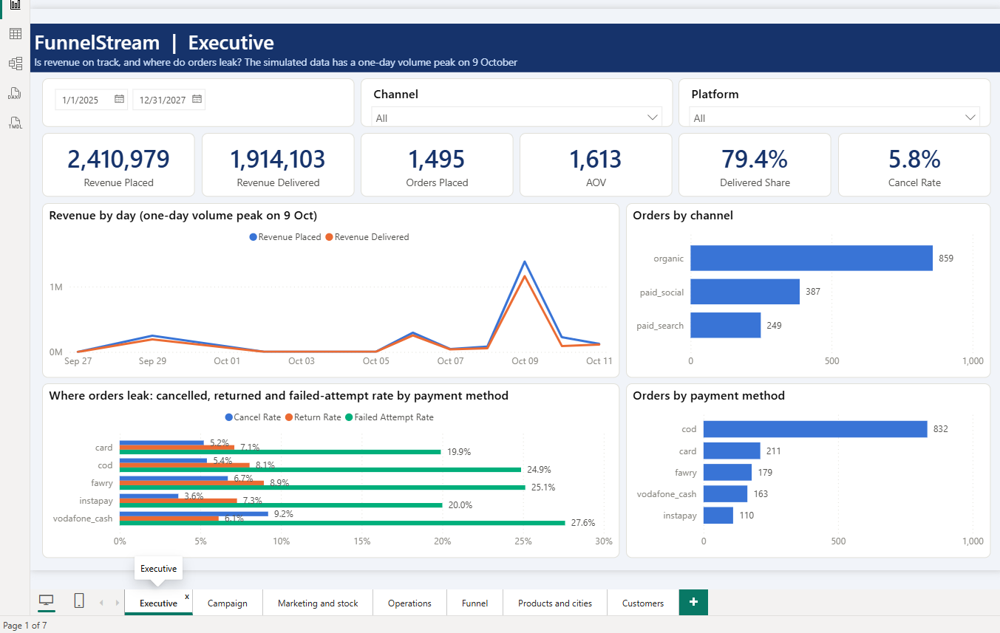
Figure 15. Executive page.
Spend, CPA, CTR, conversion rate and ROAS delivered; ROAS delivered against placed by campaign; cost per delivered order; a campaign scorecard. The subtitle reminds the reader that ad numbers use the ad API's UTC day and that the latest days are still settling.
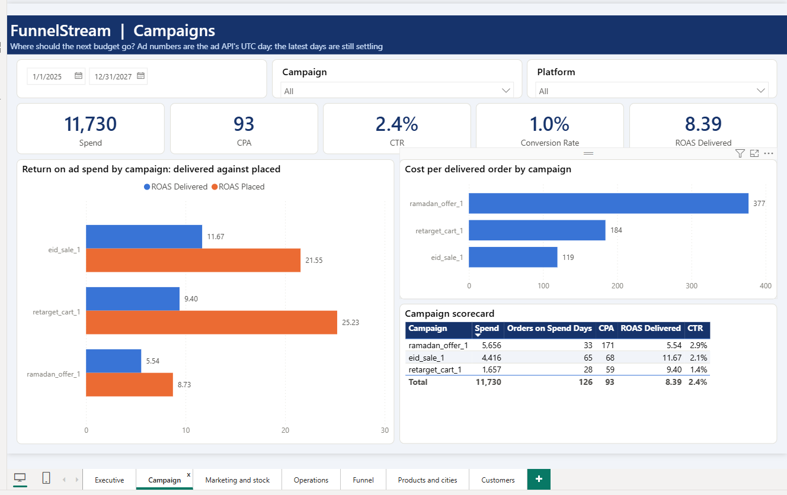
Figure 16. Campaigns page.
Exposed spend, out-of-stock click share, exposed share of spend, revenue at risk and out-of-stock add to cart; exposed spend next to each campaign's own spend; products by revenue at risk; add to cart on out-of-stock products by category.
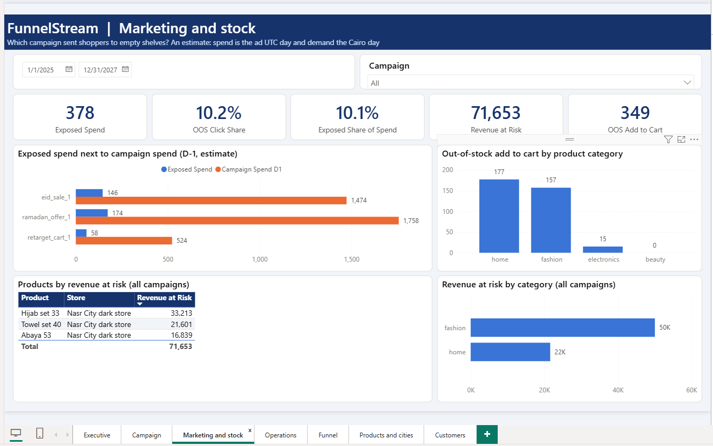
Figure 17. Marketing and stock page.
Out-of-stock and low-stock lines and rate, express orders, the express on-time rate and breaches; units sold and received by day; shrinkage rate by store; products that ended out of stock; express breaches by store; average delivery hours by carrier (all orders, standard delivery).
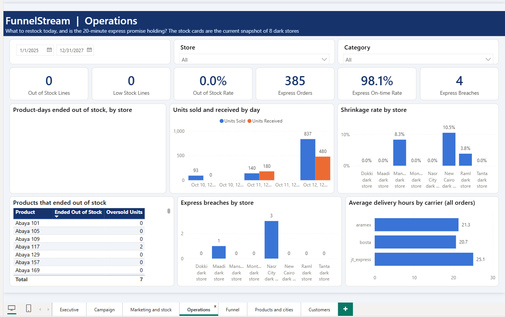
Figure 18. Operations page.
Cart abandon rate, checkout abandon rate and session conversion; the funnel from sessions to orders; abandon rate by channel; sessions by channel.
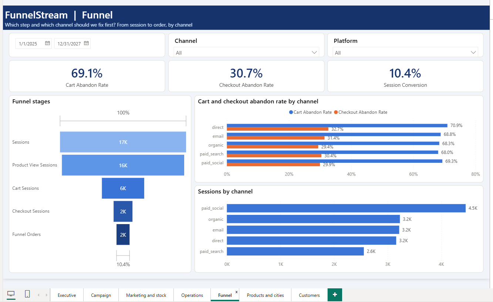
Figure 19. Funnel page.
Revenue, units, page views, add to cart and cart rate; revenue by category and by city; add to cart by category; top products.
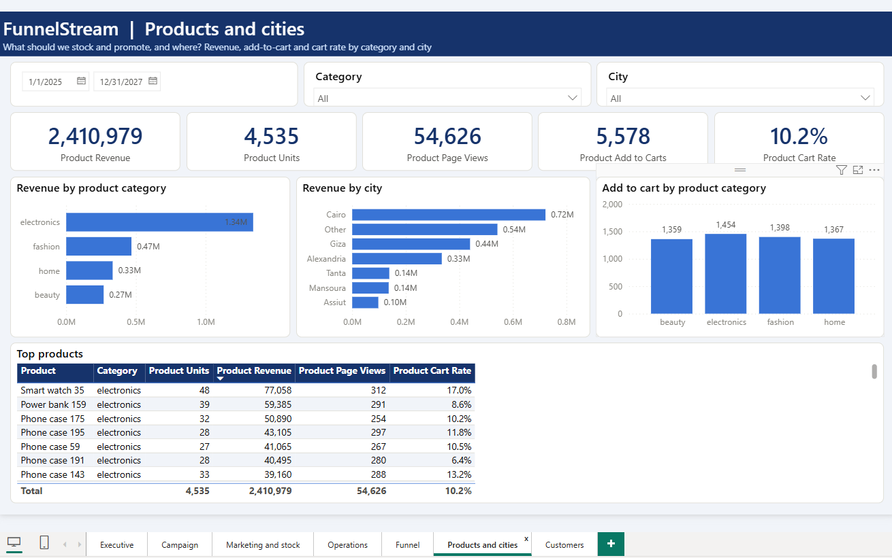
Figure 20. Products and cities page.
Customers on file, buyers, repeat buyer rate, lifetime spend, average spend per buyer and quiet buyers (7 or more days since the last order); buyers by favourite category and payment method; lifetime spend by category and city; top customers.
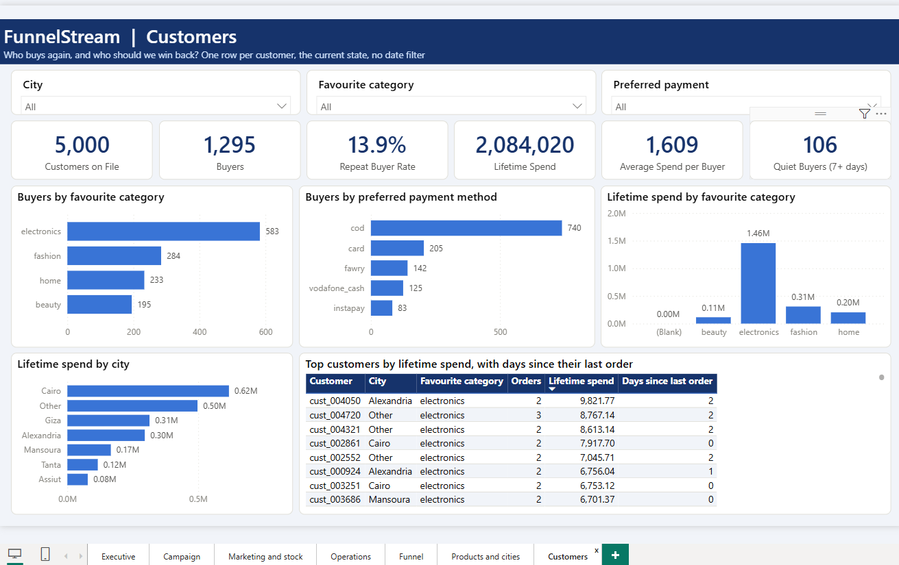
Figure 21. Customers page.
| Measure | Behaviour |
|---|---|
Revenue vs Prior 7 Days |
Latest seven days against the seven before, from explicit date ranges. On this data it reads very high because of the 9 October spike |
Average Delivery Hours |
Ignores delivered orders with zero hours. Carrier averages are about 21 to 25 hours; the earlier 4 to 5 hours were diluted by those zeros |
Days of Cover (max 90) |
Capped at 90 so a slow product does not dominate the axis |
Quiet Buyers (7+ days) |
Replaces a 30-day measure that was empty, because the data covers about 15 days |
Maturity Label |
"Settling" or "Settled", marking days whose delivered revenue can still grow |
| Cart and checkout abandon rate | Blank for an empty slice and clamped to 0 to 1, never 100% |
Open FunnelStream.pbip in Power BI Desktop. Desktop asks for a read-only Databricks token and the grafana_ro Postgres password (credentials are never stored in the file). After a Gold batch and the two Postgres builders, use Refresh. The generator scripts/make_pbip.py rebuilds the whole report folder from code and must not be run over the saved project except deliberately; backups exist under data/_archive/.
The full dictionary with formulas and filters is in docs/metrics.md. The headline definitions:
| Metric | Formula | Notes |
|---|---|---|
| ROAS delivered | revenue_delivered / spend |
Headline. Delivery lags spend by about 2 to 4 days, so recent days read low and are labelled provisional |
| ROAS placed | revenue_placed / spend |
Secondary |
| CPA | spend / orders_placed |
Placed orders |
| Cost per delivered order | spend / orders_delivered |
Delivered orders only |
| Conversion rate | orders_placed / sessions |
Per channel |
| Cart abandon rate | 1 - orders_placed / cart_sessions |
Sessions with add to cart |
| Checkout abandon rate | 1 - orders_placed / checkout_sessions |
Sessions that started checkout |
| Cancel, return, failed-attempt rate | cancelled, returned, or at least one failed attempt, over placed orders | |
| First-attempt delivery rate | first-attempt deliveries / shipped orders | |
| Average order value | revenue_placed / orders_placed |
|
| Delivery lead time | average delivered_at - order_created_at |
Delivered orders |
| Out-of-stock click share | out-of-stock landing clicks / served landing clicks | Served districts only |
| Exposed spend | spend x out-of-stock click share |
An estimate |
| Express on-time rate | on time / (on time + breached) | Target 95% |
Two day definitions exist and are stated wherever they matter: ad spend and ad clicks belong to the ad platform's UTC day; orders and demand belong to the Cairo day. They differ by at most three hours and the mismatch is accepted.
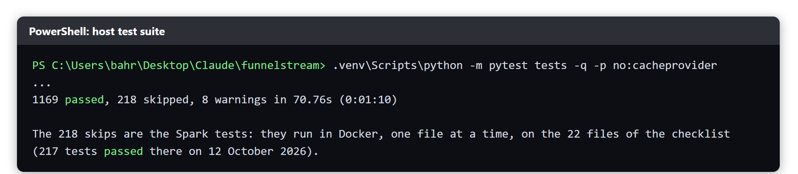
Figure 22. The full host test suite on 13 October 2026.
| Level | What | Result |
|---|---|---|
| Host tests | contracts, validator, simulator, Silver transform, store and warehouse logic, Gold SQL files, data quality definitions, Grafana JSON and alert rules, Power BI generator and measures, the LLM assistant guards | 1,169 passed, 0 failed, 218 skipped (the Spark tests) |
| Spark tests (Docker, one file at a time) | Bronze, Silver, the live sink, replay, a crash in the middle of a batch, late and duplicate events, stock never negative, Gold build | 22 files, 217 tests passed on 12 October 2026 |
| Smoke test | scripts/smoke_test.py walks 15 stages from the simulator to the Power BI source check in an isolated lake and database and writes a report |
see 11.3 |
| Benchmark | 1,000,000 events end to end | see 11.4 |
| Failure demo | kill the Silver job, restart it, check for duplicates | see 11.5 |
scripts/check_duplicates.py reads every Silver table that has a key and reports duplicates. On the lake of the 13 October rehearsal:
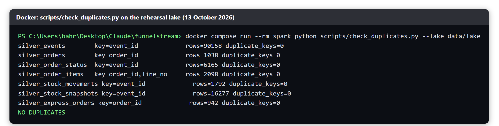
Figure 23. NO DUPLICATES across the seven keyed Silver tables.
The first complete run (13 October 2026, without the Spark test stage) showed 10 stages passing and three failing. None was a pipeline defect:
| Stage | Result | Cause and fix |
|---|---|---|
| Host tests | pass | 1,153 passed at the time |
| Reset and generate, Bronze and Silver | pass | 22,274 messages produced, Bronze 22,274 rows (exactly equal), Silver tables non-empty with no duplicate key |
| Daily marts, Alert logic, Replay safety | pass | Replay of Bronze left 10 Silver tables unchanged |
| Power BI source check | pass | 11 Gold and 7 Postgres source tables exist; 79 column references of 68 measures resolve |
| Data invariants | fail, fixed | live_metrics_minute was empty: the run replays days of history, every event is late, and that table leaves late events out by design. The check no longer requires that table |
| Dashboards run | fail, fixed | The test's stand-in for Grafana's $__timeFrom() placed a cast on the interval instead of the whole window. Fixed in the macro expansion |
| Databricks batch | fail, fixed | The insert-only MERGE kept rows of earlier runs in the scratch catalog (manifest check: 308 expected, 15,472 observed). The stage now publishes with --reset, and scripts/reset_scratch_gold.py empties the scratch Gold tables |
After the fixes, the Gold stages were rerun on the scratch catalog: BATCH OK in 175.6 seconds with 66 checks and 0 failures, and the quarantine count matched the manifest (308 expected, 308 observed). The marketing D-1 mart built three campaign rows for the data day 2026-10-07. A single uninterrupted green run of all stages is on the list of open items (section 15).
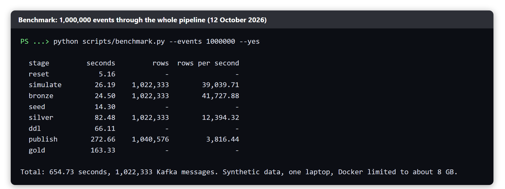
Figure 24. Benchmark of 12 October 2026 (docs/benchmark.md).
The numbers measure this one setup and are not a capacity claim. The Databricks stages ran on a Free Edition SQL warehouse.
The story: kill the Spark job while data flows, watch Grafana and the alert notice, restart with the same checkpoints, show that Silver has no duplicates.
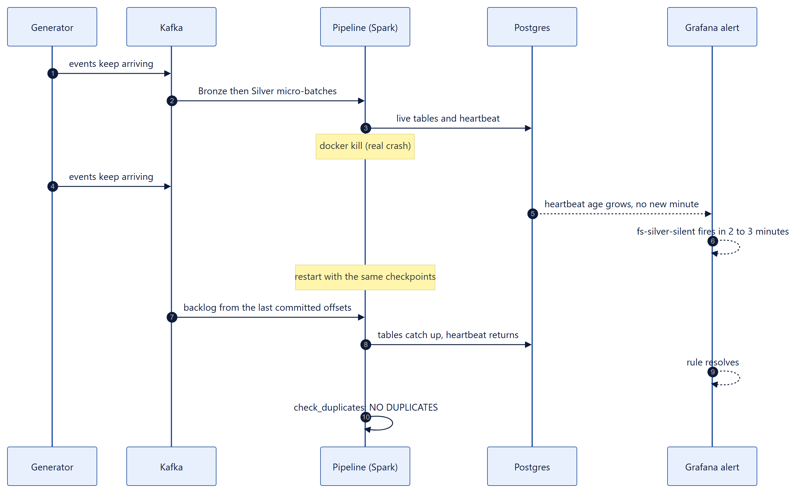
Figure 25. Failure demo sequence.
Measured on 12 October 2026, twice in a row, on a clean lake (Cairo time):
| Run 1 | Run 2 | |
|---|---|---|
| Kill | 21:40:05 | 21:45:23 |
| "Silver job silent for 2 minutes" fired | 2 min 12 s after the kill | 2 min 54 s after the kill |
| Heartbeat back under 30 s | about 40 s after the restart | about 35 s after the restart |
| Duplicate check after restart | NO DUPLICATES (8,469 events, 123 orders, 217 stock movements) | NO DUPLICATES (16,404 events, 210 orders, 367 stock movements) |
The promise to make is "within 3 minutes", not "within 2". The check covers Silver only: it does not look at Bronze (append-only, may hold re-delivered messages) and does not prove that no event was lost.
A live rehearsal with the inventory scenario ran about 30 minutes. All 64 panel queries of the six dashboards were executed against the live database without error. The rehearsal drove fixes that are now in the repository: gaps instead of zero-fill on rates and stock levels, leftover express orders from earlier runs no longer shown as open, one colour rule at the 95% target for every on-time rate, a neutral dash for "no data", thousands separators instead of "4 K", and readable headers on the marketing tables.
| Topic | Practice |
|---|---|
| Secrets | .env is never committed. .env.example lists names only (Postgres, Databricks host, token, warehouse id, catalog, volume, Grafana passwords, optional ANTHROPIC_API_KEY) |
| Network exposure | Kafka, Postgres, Grafana and Airflow ports are bound to 127.0.0.1 only |
| Databricks | Power BI and Grafana use read-only credentials. The write token is used only by the load jobs and never goes into a Power BI file. The smoke test refuses to touch the real catalog and works in a scratch catalog |
| Postgres | Grafana and Power BI use the read-only role grafana_ro with SELECT on named tables |
| Personal data | Names and phone numbers exist only in Bronze and Silver and are not published to the Databricks mirror (allow-listed columns). Gold and Power BI hold customer_id only. All data is synthetic |
| Destructive actions | Lake resets, truncates and Databricks resets need explicit approval and are scripted with a plan-only mode |
| Repository hygiene | .env, .venv, data/ and scratch folders are git-ignored |
src/llm/ lets a user ask questions in natural language about the generated data ("Which campaign had the highest CTR?"). The model writes one SELECT at a time, which runs against read-only DuckDB views.
| Guard | Behaviour |
|---|---|
| No file or network access | File access is switched off and the configuration locked after the data is loaded |
| Limits | 20 second time limit and a 200 row cap per query |
| Data is not instructions | Query results are wrapped in <query_result> tags and cut, so data cannot pass for instructions |
| No personal data | The model does not receive names or phone numbers |
| Keys | The API key is read from the environment or .env (only the LLM settings are loaded) and is never logged; the Streamlit key field is not pre-filled |
| Errors | API calls have a 60 second timeout and 3 retries; errors become plain messages |
Sources are sim (default, generated in memory with the project's simulator, no Docker needed), csv, kafka and delta. Run python src/llm/agent.py "question" or streamlit run src/llm/app.py. The guards are tested in tests/test_llm_assistant.py.
Windows 11, Docker Desktop with about 8 GB of memory, Python 3.11. Java and Spark live inside the Docker image; do not install them on the host. Before a live demo: at least 4 GB of free RAM (6 GB is better), synchronise the clock (w32tm /resync /force in an administrator shell), prevent sleep, and switch Docker Resource Saver off.
Copy-Item .env.example .env # then set your own passwords; never commit .env
python -m venv .venv
.venv\Scripts\python -m pip install -r requirements.txt
docker compose build spark
docker compose up -d kafka postgres grafana
.venv\Scripts\python kafka/create_topics.py
docker compose run --rm spark python scripts/seed_silver_reference.py --lake data/lake
.\scripts\watch_demo.ps1 -Inventory -Events 60000 # Kafka, pipeline and generator windows; Grafana at http://localhost:3000
.\scripts\watch_demo.ps1 -Inventory -ExpressPromiseMinutes 2 -LateExpressEvery 15 # fast express rehearsal
.\scripts\stop_demo.ps1
watch_demo.ps1 starts Kafka, Postgres and Grafana, creates the topics, applies the live DDL and opens the windows. Each round of the generator runs its stock and express timeline to the end before the next round starts, so a short round leaves a quiet gap in the traffic panels. A longer round keeps traffic on for longer: a 30,000-event round gave about 8 minutes of continuous traffic followed by a gap of about 4 minutes in the rehearsal, and -Events 60000 should double the traffic window (not yet rehearsed).
Start from a clean state. Old Bronze and Silver data and old checkpoints make Silver work through a backlog first. Move data/lake and data/checkpoints aside, recreate Kafka (docker compose rm -sf kafka, then docker compose up -d kafka), empty the live Postgres tables and start again. The smoke test recreates Kafka too, so delete data\checkpoints after it.
.\scripts\watch_demo.ps1 -Rate 20 -SyncEvery 0 # wait about 2 minutes
python scripts\alert_sink.py # separate terminal: shows alert messages
.\scripts\failure_demo.ps1 status # heartbeat under 30 s
.\scripts\failure_demo.ps1 kill # docker kill: a real crash
.\scripts\failure_demo.ps1 status # repeat: heartbeat age grows
.\scripts\failure_demo.ps1 restart # same command and checkpoints
.\scripts\failure_demo.ps1 verify # duplicate check on Silver
docker compose run --rm spark python scripts/run_batch.py --full # publish, Gold build, 66 checks
docker compose run --rm spark python scripts/build_inventory_daily.py --date today --days 2
docker compose run --rm spark python scripts/build_d1_marketing.py # needs Databricks settings and a finished Gold batch
.venv\Scripts\python -m pytest tests -q -p no:cacheprovider # host tests
docker compose run --rm -e RUN_SPARK_TESTS=1 spark python -m pytest tests/test_silver_clean_spark.py -q # one Spark test file
.venv\Scripts\python scripts\smoke_test.py --dry-run # read the plan first
.venv\Scripts\python scripts\smoke_test.py --yes --skip-spark-tests # recreates Kafka
.venv\Scripts\python scripts\benchmark.py --events 1000000 --yes # one-off; already done
| Symptom | Likely cause and remedy |
|---|---|
| Silver batches slower than the 10 second trigger | Normal on this laptop (a "batch is falling behind" warning). Keep the Gold sync window off during a demo |
| Docker engine crashes or processes are killed | Low free RAM. Close Power BI Desktop and browsers; keep at least 4 GB free |
localhost:9092 or localhost:3000 stop answering after Docker restarts |
docker compose restart kafka or docker compose up -d --force-recreate grafana |
| The alert does not notify a second time | Alerts notify only on a state change. Empty the old state before an on-camera demo |
| Dashboards show last run's data | Provisioned dashboards are read from files; restart the Grafana container after changing them |
| A script cannot read the Databricks settings | The host does not read .env. Run such scripts in the spark container |
These are stated on the dashboards and in the documents, and are the honest answers to questions at the defense.
| Limitation | Meaning |
|---|---|
| Simulated data | Customers, orders, ad numbers and stock are generated. Numbers show the pipeline and the method, not real business performance |
| One-day peak | About 55% of all revenue falls on 9 October in the simulated data. The Executive page says so |
| Out-of-stock flag | The flag on a demand minute is the stock when the minute was written. A replay or a late event can flag it differently, and a stock-out that begins mid-minute credits the whole minute. Exposed spend and the daily marts inherit this. The fix (zero-stock intervals from Silver joined by event time) is future work |
| No stock reversal | Stock is reserved when an order is placed and not put back on cancellation, return or failed delivery, so stock drifts down |
| Exposed spend is an estimate | Spread-evenly assumption over served landing clicks; Assiut and "other" are not served |
| Two day definitions | Ad numbers use the UTC day, orders the Cairo day, at most three hours apart |
| Store is conformed in Postgres only | Gold has City, not Store. "Orders and stock for the same store" is answered in Postgres only |
| Express KPIs | Exist only in express_daily and live_express_orders; the Gold delivery measures include express with standard orders |
| Campaign key | Traffic without a campaign is direct, which the Campaign dimension has no row for (it shows as blank) |
| Bots in demand | The out-of-stock demand path does not remove bot sessions; Gold does |
| Failure-demo scope | The duplicate check covers Silver only |
| Free Edition limits | The Databricks workspace is a Free Edition SQL warehouse; the benchmark is one setup, not a capacity claim |
Open items on the day of the defense
build_d1_marketing.py against the real catalog after a finished Gold batch. It ran only on the scratch catalog.agg_oos_demand_daily.rec_product (the table and the Gold step slot exist).POSTGRES_USER, POSTGRES_PASSWORD, POSTGRES_DB, PG_DSN, GRAFANA_DB_PASSWORD, GRAFANA_ADMIN_PASSWORD, DATABRICKS_HOST, DATABRICKS_TOKEN, DATABRICKS_WAREHOUSE_ID, DATABRICKS_HTTP_PATH, DATABRICKS_CATALOG, DATABRICKS_VOLUME, GOLD_BACKEND, AD_API_URL, SIM_SEED, ANTHROPIC_API_KEY, ANTHROPIC_WORKSPACE_ID, FUNNELSTREAM_LLM_MODEL. Values are never committed.
| Figures | Source | Note |
|---|---|---|
| 6, 7, 8, 9 | Grafana, live rehearsal of 13 October 2026, captured with headless Chrome | Rehearsal data (simulated). The express section of Figures 7 and 8 shows breaches on purpose (2-minute promise, every 15th order late) |
| 10, 11 | Grafana, same day | Daily dashboards over the 14-day range; Figure 10 was taken before the on-time colours were aligned to the 95% target |
| 12 | Grafana alert rules page, 13 October 2026 | Four rules firing because the rehearsal pipeline was stopped |
| 15 to 21 | Power BI Desktop, owner's screenshots of 12 October 2026, 23:07 | Taken before three last chart fixes: Customers (average spend by favourite category replaces the chart with a (Blank) bar), Operations (a chart of oversold units replaces the empty "ended out of stock" chart) and Funnel (labels no longer abbreviated to "2K") |
| 5, 13, 22, 23, 24 | Terminal output, 12 and 13 October 2026 | Real captured output re-rendered as images |
| 1 to 4, 14, 25, 26 | Diagrams drawn for this document |
| Purpose | Command |
|---|---|
| Start the live demo | .\scripts\watch_demo.ps1 -Inventory |
| Stop the live demo | .\scripts\stop_demo.ps1 |
| Failure demo | .\scripts\failure_demo.ps1 status|kill|restart|verify |
| Duplicate check | docker compose run --rm spark python scripts/check_duplicates.py --lake data/lake |
| Apply live DDL and role | docker compose run --rm spark python scripts/apply_live_ddl.py |
| Publish Silver to Databricks | docker compose run --rm spark python scripts/publish_silver.py |
| Gold build with checks | docker compose run --rm spark python scripts/run_batch.py |
| Regenerate Grafana JSON | .venv\Scripts\python scripts/gen_dashboards.py |
| Export sample CSVs | .venv\Scripts\python scripts/export_samples.py |
| Ask the assistant | python src/llm/agent.py "Which campaign had the highest CTR?" |
| Term | Meaning |
|---|---|
| Bronze, Silver, Gold | Raw, validated and business-ready layers of the lakehouse |
| COD | Cash on delivery |
| CPA, ROAS, CTR | Cost per acquisition, return on ad spend, click-through rate |
| D-1 | The report for the previous day |
| Dark store | A small warehouse that serves quick-commerce orders |
| Express promise | The delivery time (20 minutes) the shopper is promised |
| Hero scenario | The scripted stock-out, lost demand, alert and restock used in the demo |
| MERGE | The Delta operation that inserts a row only if its key is not already there |
| Quarantine | The table that holds rejected rows with an error code |
| SCD2 | Slowly changing dimension type 2: a new row per change with validity dates |
| Watermark | The allowed lateness of events in stream processing |
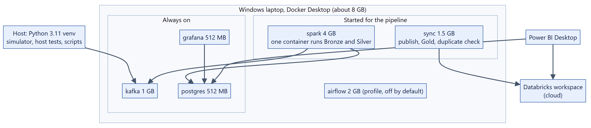
Figure 26. Docker services and their memory limits on the laptop, and what connects to the cloud.
| Document | Content |
|---|---|
README.md |
Overview and quick start |
docs/RUNNING.md |
The full running guide with measured numbers |
docs/metrics.md |
The metric dictionary |
docs/superpowers/specs/2026-10-04-funnelstream-design.md |
The design specification |
docs/superpowers/specs/2026-10-10-inventory-two-users-design.md |
The inventory and two-user design |
docs/superpowers/specs/2026-10-12-powerbi-redesign-design.md |
The Power BI redesign |
docs/data-model-review.md |
The 25-finding model review and its resolution status |
docs/PRE-DEFENSE-CHECKLIST.md |
The step list before the defense |
docs/benchmark.md |
The benchmark |
dashboards/powerbi/MODEL.md |
The Power BI model guide |